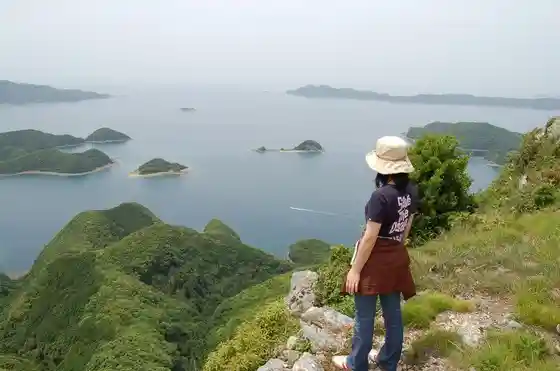
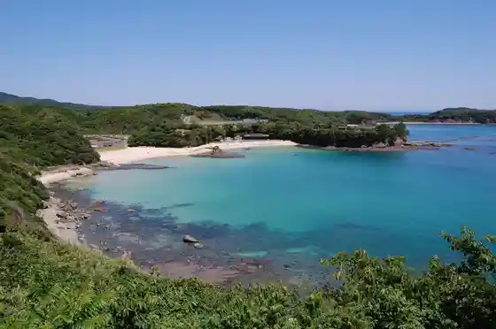
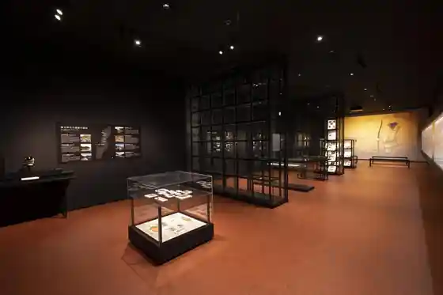
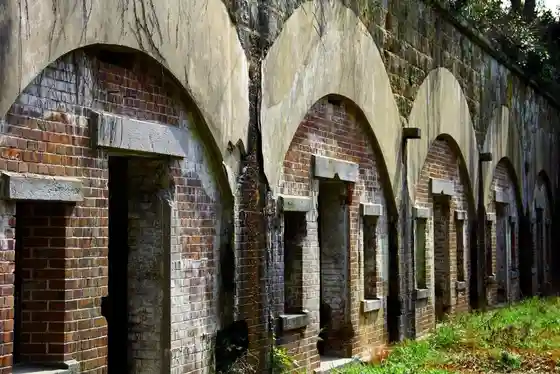

Bansho In
Tsushimashi, Nagasaki · 0920-52-0984 · Official / source link
Kaneda Shiro
Tsushimashi, Nagasaki · Official / source link

San Uta Hama Beach
Tsushimashi, Nagasaki · 0920-86-3111 · Official / source link

Tsushimashi Museum
Tsushimashi, Nagasaki · 0920-53-5100 · Official / source link

Himegami Sanpo Dai Ato
Tsushimashi, Nagasaki · Official / source link

Ayu Modoshi Nature Park
Tsushimashi, Nagasaki · 0920-53-6111 · Official / source link
Fureai Tokoro Tsushima
Tsushimashi, Nagasaki · 0920-52-1566 · Official / source link
Kankyo Sho Tsushimashi Yasei Seibutsu Hogo Center
Tsushimashi, Nagasaki · 0920-84-5577 · Official / source link
Kaneishi Castle Ruins
Tsushimashi, Nagasaki · Official / source link
Hatcho Kaku
Tsushimashi, Nagasaki · 0920-52-1566 · Official / source link
Tsushimashi Han O Fune Ko Ato
Tsushimashi, Nagasaki · Official / source link
Fune Kokorozashi no Momiji Kaido
Tsushimashi, Nagasaki · 0920-86-4838 · Official / source link
Shimizu Yama Castle Ruins
Tsushimashi, Nagasaki · Official / source link
Tenjin Tagusutama Shrine
Tsushimashi, Nagasaki · Official / source link
Kyujitsu Shinkan Mon (Ishibei Wo Fukumu)
Tsushimashi, Nagasaki · 0920-54-2341 · Official / source link
Entsu Tera
Tsushimashi, Nagasaki · 0920-82-0270 · Official / source link
Yutaka Hodai Ato
Tsushimashi, Nagasaki · 0920-86-4839 · Official / source link
Ikoku no Mie Ru Oka Lookout
Tsushimashi, Nagasaki · Official / source link
Man Kan Lookout
Tsushimashi, Nagasaki · Official / source link
Kon no Oicho
Tsushimashi, Nagasaki · Official / source link
Ishiya Ne Soko
Tsushimashi, Nagasaki · Official / source link
Tsushimashi Furusato Densho Kan
Tsushimashi, Nagasaki · 0920-54-8311 · Official / source link
Ue Tsushimashi Onsen (Nagisa Baths)
Tsushimashi, Nagasaki · 0920-86-4568 · Official / source link
Chosen Kokuyaku Kan Shi Junnan Yuki Hi
Tsushimashi, Nagasaki · 0920-86-4839 · Official / source link
Komoda Hama Beach
Tsushimashi, Nagasaki · 0920-52-1566 · Official / source link
Kisaka Omae Hama Enchi
Tsushimashi, Nagasaki · 0920-83-0301 · Official / source link
Komoda Hama Shrine (Taisai)
Tsushimashi, Nagasaki · Official / source link
Isaribi Park
Tsushimashi, Nagasaki · Official / source link
Motegi Hama Beach
Tsushimashi, Nagasaki · 0920-86-3111 · Official / source link
Sao Saki Park
Tsushimashi, Nagasaki · 0920-84-2311 · Official / source link
Soba Dojo (Agata Village)
Tsushimashi, Nagasaki · 0920-84-2340 · Official / source link
Mizu Shima Town Beach
Tsushimashi, Nagasaki · 0920-54-2271 · Official / source link
Nihonkaikaisen Kinenhi (Dono Saki Park)
Tsushimashi, Nagasaki · Official / source link
Shinwa no Sato Nature Park
Tsushimashi, Nagasaki · 0920-58-1111 · Official / source link
Me Ho Ro Damu Baji Park
Tsushimashi, Nagasaki · 0920-85-1113 · Official / source link
Toyotama no Inoshishi Kaki (Toyotama no Igaki)
Tsushimashi, Nagasaki · 0920-54-2341 · Official / source link
Ryu Ryo Yamahara Shi Hayashi
Tsushimashi, Nagasaki · Official / source link
Aoshio Village (O Ura Campground Beach)
Tsushimashi, Nagasaki · Official / source link
Waniura Enchi
Tsushimashi, Nagasaki · 0920-86-3111 · Official / source link
Nishiyama Tera
Tsushimashi, Nagasaki · 0920-52-0444 · Official / source link
Seikai Village
Tsushimashi, Nagasaki · 0920-86-4839 · Official / source link
Sago Badotchingu Park
Tsushimashi, Nagasaki · 0920-84-2311 · Official / source link
Ajiro no Renkon to Sentaku Iwa
Tsushimashi, Nagasaki · 0920-54-2341 · Official / source link
Nishidomari Beach
Tsushimashi, Nagasaki · 0920-86-3111 · Official / source link
Roku Omae Shrine no Oicho (Mutsu no Gozenjinja no Oicho)
Tsushimashi, Nagasaki · 0920-54-2341 · Official / source link
Asahiyama Burial Mound
Tsushimashi, Nagasaki · 0920-54-2341 · Official / source link
Kansho Okina Harada Saburo Uemon no Hi
Tsushimashi, Nagasaki · 0920-54-2341 · Official / source link
Chosen Kuni Tsushin Shi Yuki Hi
Tsushimashi, Nagasaki · 0920-52-1566 · Official / source link
Narutaki
Tsushimashi, Nagasaki · Official / source link
to no Kubi Iseki
Tsushimashi, Nagasaki · 0920-54-2341 · Official / source link
Isaribi
Tsushimashi, Nagasaki · 0920-52-1566 · Official / source link
Bunka no Sato (Kyodo Kan)
Tsushimashi, Nagasaki · 0920-58-0062 · Official / source link
Su Mo Shiratake Genshi Hayashi
Tsushimashi, Nagasaki · 0920-52-1566 · Official / source link
Experience Deai Juku (Takumi)
Tsushimashi, Nagasaki · 0920-56-0118 · Official / source link
Tsunashima
Tsushimashi, Nagasaki · 0920-58-1111 · Official / source link
Sajikibara Kan no Korai Mon (Kyu Sajikibara Jomon)
Tsushimashi, Nagasaki · 0920-52-1566 · Official / source link
Senjin Mo no Renkon (Chiromo no Renkon)
Tsushimashi, Nagasaki · 0920-53-6111 · Official / source link
Ima Residence no Bokaheki
Tsushimashi, Nagasaki · Official / source link
Ontake
Tsushimashi, Nagasaki · Official / source link
Minatohama Beach
Tsushimashi, Nagasaki · 0920-84-2311 · Official / source link
to Su no Dai Sotetsu
Tsushimashi, Nagasaki · 0920-54-2341 · Official / source link
Ne So Kofun Gun
Tsushimashi, Nagasaki · 0920-54-2341 · Official / source link
Shutsu Kyo Tsuka Burial Mound (Tsuru no Yama Burial Mound)
Tsushimashi, Nagasaki · 0920-54-2341 · Official / source link
Daishogun Yama Burial Mound
Tsushimashi, Nagasaki · 0920-54-2341 · Official / source link
Matsu Village Yasugoro Yoshino Kazu Yukisuke no Kensho Hi
Tsushimashi, Nagasaki · 0920-52-1566 · Official / source link
Tagusutama Shrine
Tsushimashi, Nagasaki · Official / source link
Kisaka Lookout
Tsushimashi, Nagasaki · 0920-83-0301 · Official / source link
Tazu Hara Park (Tsushimashi Kaikyo Sonansha Tsuito Yuki Hi)
Tsushimashi, Nagasaki · 0920-83-0301 · Official / source link
Yatate Yama Burial Mound
Tsushimashi, Nagasaki · 0920-54-2341 · Official / source link
Nokogiri Wari Iwa
Tsushimashi, Nagasaki · Official / source link
Amamori Hoshu Sensei Kensho Hi
Tsushimashi, Nagasaki · 0920-52-1566 · Official / source link
Nagasaki Prefectural Tsushimashi Seinen no Ie
Tsushimashi, Nagasaki · 0920-83-0559 · Official / source link
Nami Ji Uneme no Haka (Haji no Uneme no Haka)
Tsushimashi, Nagasaki · 0920-54-2341 · Official / source link
Kofu no Sae Iseki
Tsushimashi, Nagasaki · 0920-54-2341 · Official / source link
Ryu Ryo Sanroku Nature Park Center
Tsushimashi, Nagasaki · 0920-57-1283 · Official / source link
Hokyo Into to Gorin to Gun
Tsushimashi, Nagasaki · 0920-54-2341 · Official / source link
Ho Kiyoshi Tera (O Do Tsuka)
Tsushimashi, Nagasaki · 0920-56-0257 · Official / source link
Bijo Tsuka
Tsushimashi, Nagasaki · Official / source link
Hotaru Kansho
Tsushimashi, Nagasaki · 0920-52-1566 · Official / source link
Kaminari Inochi Shrine
Tsushimashi, Nagasaki · 0920-52-1566 · Official / source link
Matsushima Park (Beach)
Tsushimashi, Nagasaki · 0920-86-3111 · Official / source link
Badotchingu
Tsushimashi, Nagasaki · 0920-52-1566 · Official / source link
Ikeda Hama (Ikeda no Tsutsumi)
Tsushimashi, Nagasaki · 0920-58-1111 · Official / source link
O Kubizuka
Tsushimashi, Nagasaki · 0920-53-1566 · Official / source link